uts#
1. Gambaran Umum#
Workflow ini dibuat menggunakan Orange Data Mining untuk melakukan:
Preprocessing data
Eksplorasi data (visualisasi)
Pemodelan machine learning (kNN)
Evaluasi model
Dataset yang digunakan:
2. Alur Kerja (Workflow)#
1. Input Data#
Widget: CSV File Import
Mengimpor dataset dari file CSV
Data awal kemungkinan masih memiliki missing value
Output: Data mentah
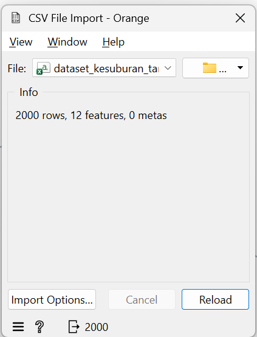
2. Menampilkan Data Awal#
Widget: Data Table
Menampilkan isi dataset untuk inspeksi awal
Tujuan:
Melihat struktur data
Mengetahui missing value
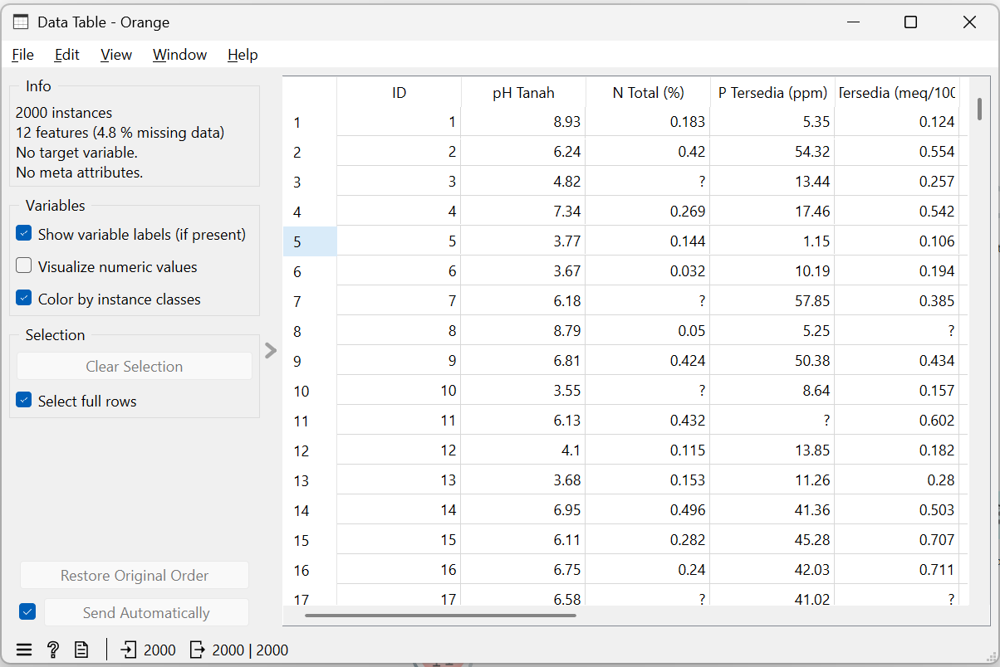
#3. Seleksi Fitur#
Widget: Select Columns
Memilih atribut yang digunakan sebagai:
Feature (input)
Target (label)
Output: Data terpilih
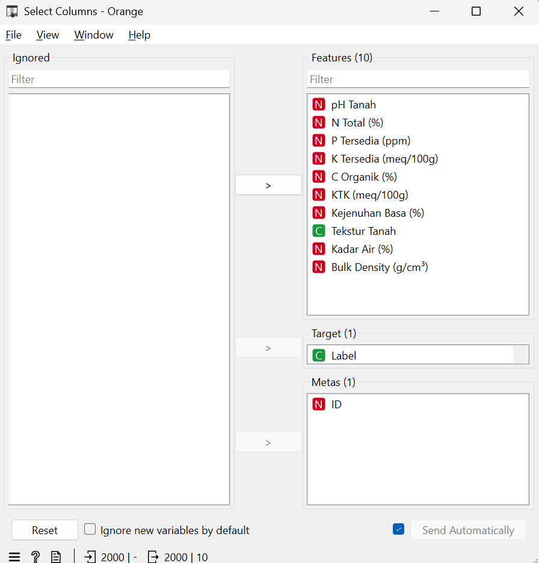
#4. Eksplorasi Data (EDA)#
a. Distribusi Data#
Widget: Distributions
Melihat distribusi tiap fitur
b. Box Plot#
Widget: Box Plot
Melihat outlier
Tujuan:
Memahami karakteristik data
Deteksi anomali
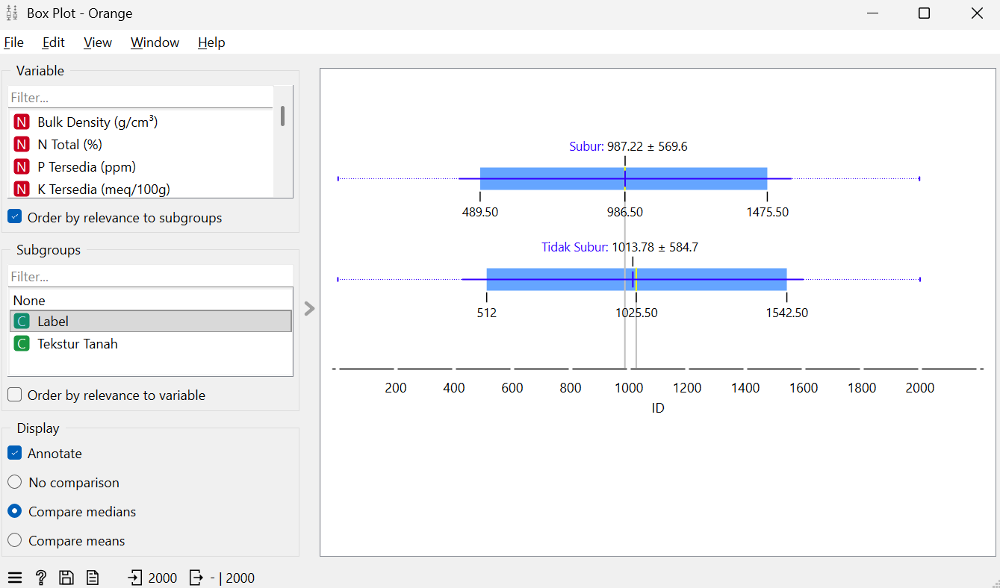
#5. Menangani Missing Value#
Widget: Impute
Mengisi nilai yang hilang (missing value)
Metode umum: mean, median, dll
Output: Data bersih dari missing value
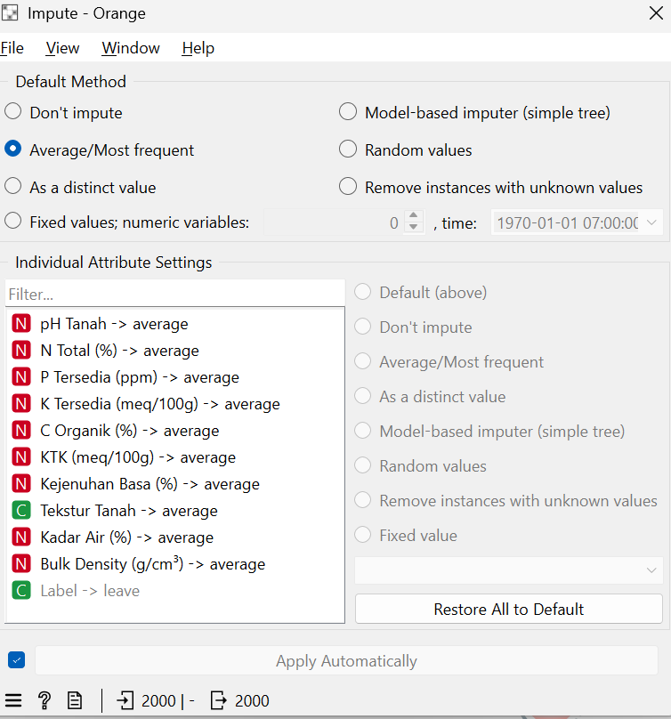
#6. Transformasi Data#
Widget: Continuize
Mengubah data kategorikal menjadi numerik
Penting untuk:
Algoritma kNN (butuh numerik)
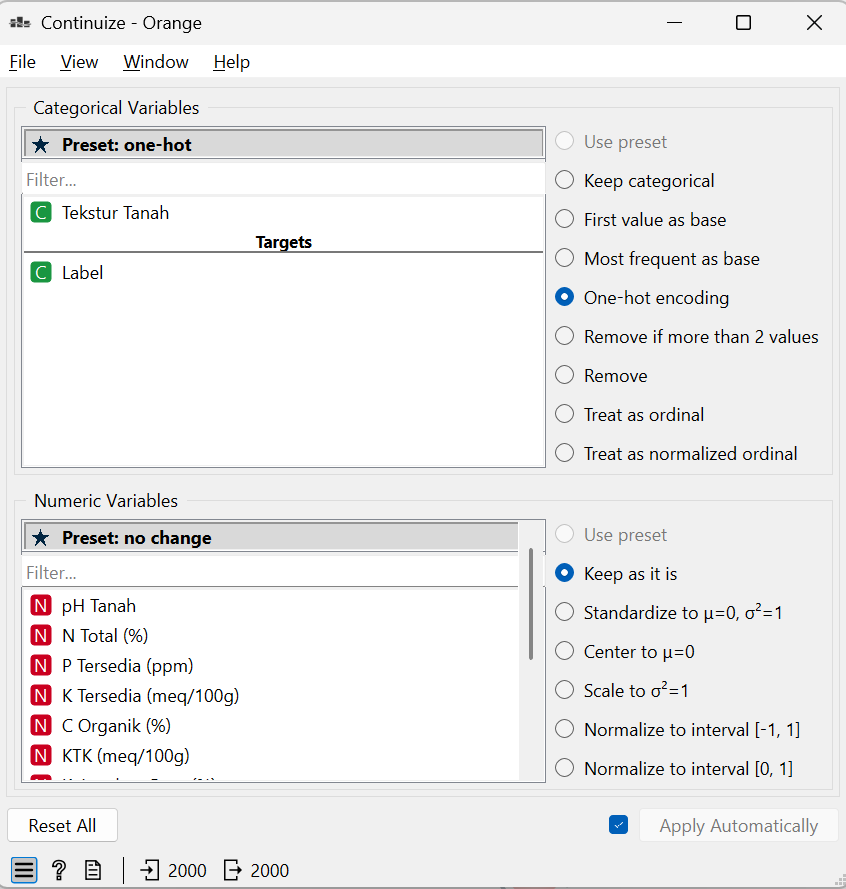
#7. Preprocessing Lanjutan#
Widget: Preprocess
Biasanya meliputi:
Normalisasi / standardisasi
Scaling data
Output: Data siap untuk modeling
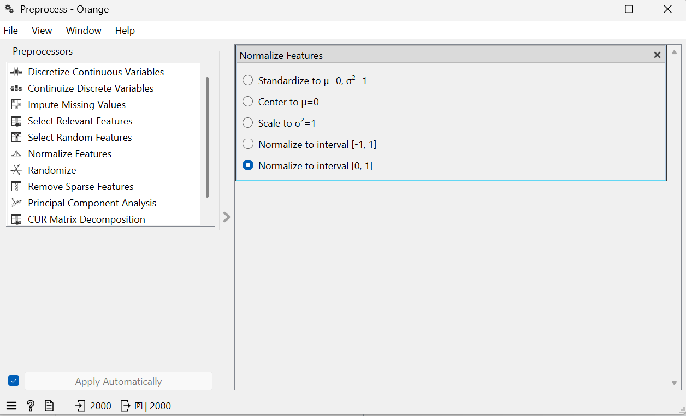
#8. Modeling (Machine Learning)#
Widget: kNN (k-Nearest Neighbor)
Menggunakan algoritma kNN untuk klasifikasi
Input:
Data hasil preprocessing
Output:
Model kNN
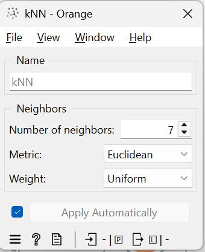
#9. Evaluasi Model#
Widget: Test and Score
Menguji performa model
Biasanya menggunakan:
Cross-validation
Output:
Akurasi
Precision
Recall
F1-score
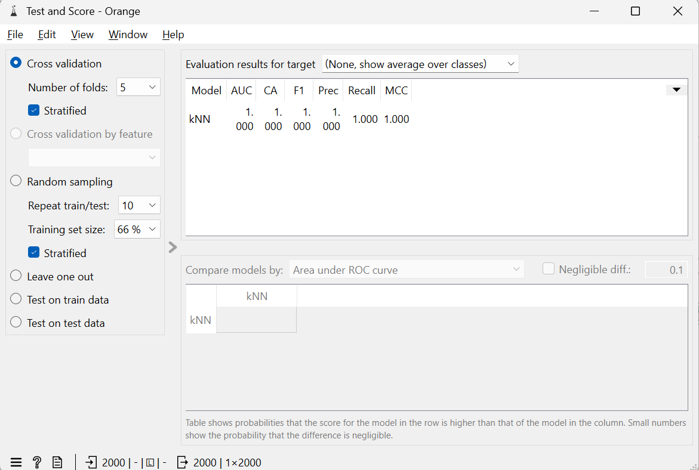
#10. Confusion Matrix#
Widget: Confusion Matrix
Menampilkan hasil prediksi vs aktual
Berguna untuk:
Melihat kesalahan klasifikasi
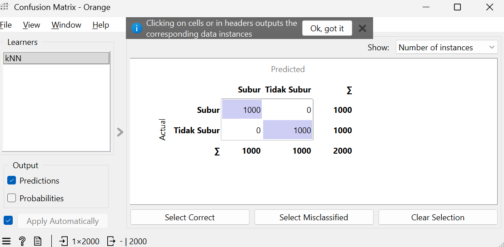
#11. Reduksi Dimensi (Opsional)#
Widget: PCA
Mengurangi dimensi data
Tujuan:
Visualisasi lebih mudah
Mengurangi kompleksitas
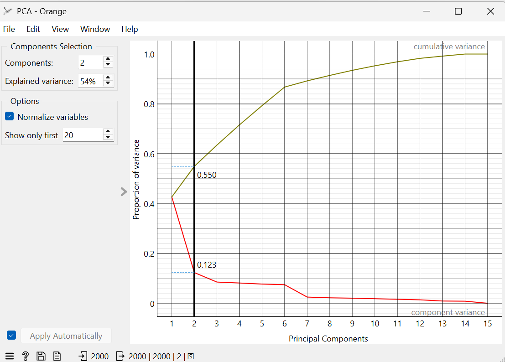
#12. Visualisasi#
Widget: Scatter Plot
Menampilkan data dalam bentuk 2D
Input:
Data dari PCA
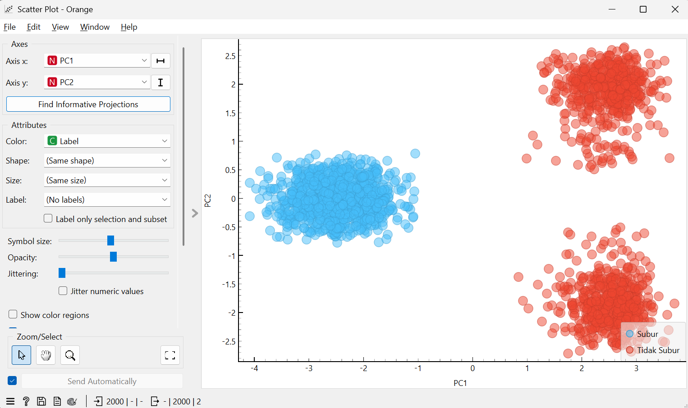
#3. Ringkasan Alur#
CSV Import ↓ Data Table ↓ Select Columns ↓ (Impute → Continuize → Preprocess) ↓ ├── kNN → Test & Score → Confusion Matrix ├── PCA → Scatter Plot ├── Distributions └── Box Plot
4. Hasil yang Diperoleh#
1. Data Bersih#
Missing value sudah ditangani
Data siap modeling
2. Model kNN#
Model klasifikasi berbasis jarak
3. Evaluasi Model#
Dari Test and Score diperoleh:
Akurasi model
Precision
Recall
F1-score
4. Confusion Matrix#
Menunjukkan:
True Positive
False Positive
False Negative
True Negative
5. Visualisasi Data#
Scatter plot (dari PCA)
Distribusi fitur
Outlier (box plot)
5. Kesimpulan#
Workflow ini melakukan proses lengkap:
Data preprocessing
Eksplorasi data
Training model (kNN)
Evaluasi performa
Visualisasi hasil